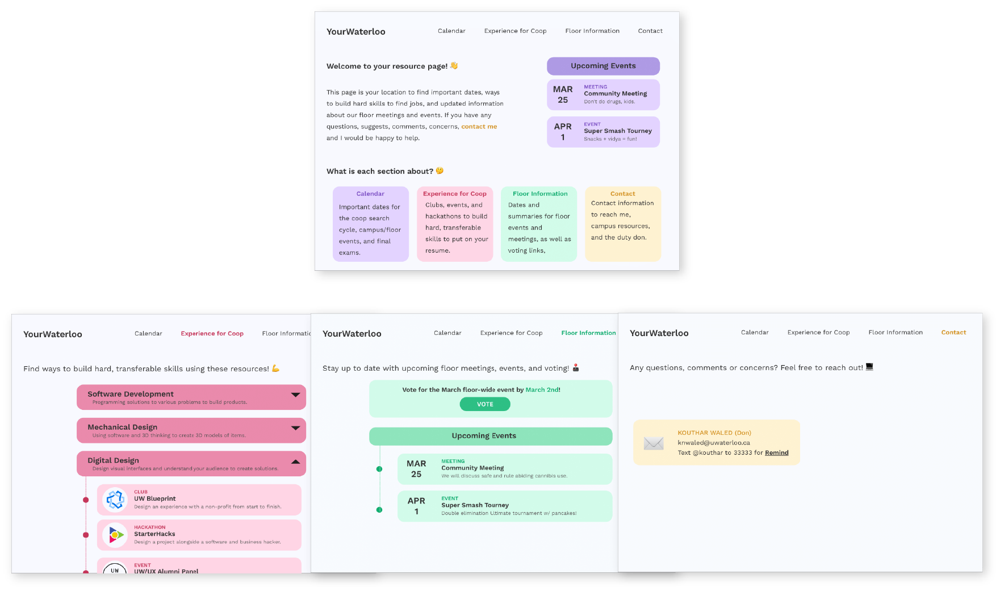
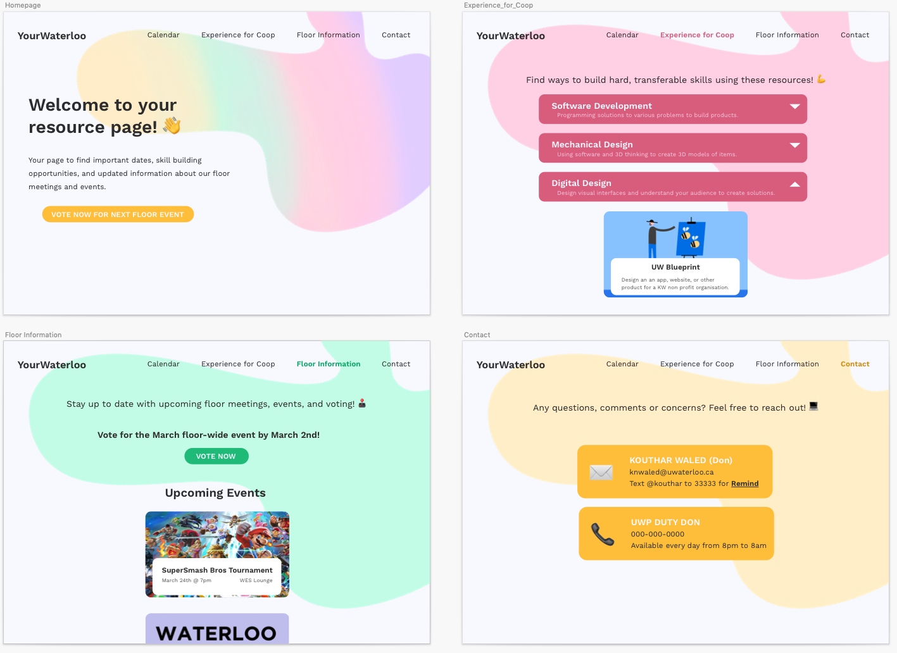

Background
As a Residence Assistant, I am "live-in" mentor and supervisor for 60+ first year engineering students. I would get information from Residence Life Management to relay to students, and also served as a mentor to learn about my students. I wanted to figure out the best way to support my students to learn and grow as well as keep them updated with relevant information.
Understanding My Users
Problem
1. Sending information & Student engagement
I received several weekly updates from Residence Life Management to relay to students, but if I sent weekly e-mails, the frequency would lead to lower student engagement and my e-mails containing pertinent information would get ignored.
2. Helping my students grow and develop as they want to
I wanted to support my students in developing themselves and feeling comfortable in residence, but I didn't know what was important to them.
To validate what I had in mind, using what I knew from interviews with the users, I further broke down the problem.
User Research
Methods:
1. Interviews
2. Surveys
I conducted unstructured interviews to better understand how my users feel in their current environment. I hypothesised that coop, academics, and social life would be both the root of users worries and goals based on previous knowledge having been a student in their shoes once, too.
I knew from previous experience that first year engineers typically worry the most about academics, finding a community, and securing their first coop, but I didn’t know to what extent my students could use some extra help. So, I conducted interviews and sent out a survey to fill in the gaps of my knowledge.
During my interviews, I asked broad, open ended-questions like “What is stressing you out right now?” and “What are you hoping for this semester?” so I could empathise with my users and have them speak candidly about their worries and goals.
From the interviews I conducted, I was able to make a general board about my users’ thoughts and feelings. I made an empathy map to categorise my users’ thoughts and feelings so I could effectively put myself into their shoes to refine the design process and prioritise content.
Using the empathy map and the insights from my research, I was able to associate my users’ goals and worries as well as give answers on how to help them achieve their goals and alleviate their worries. These flows filled in sentences like “I am ______ and I want to _____ so that I can ____.”
The survey I sent out not only backed up the insights I made from my interviews, but also gave me a lot of insights about my users’ habits, especially how they receive information and where they actively look for information. I knew that meant my solution needed to align with their current habits rather than try to carve out a new habit - like requiring them to go to a very specific posterboard to find information.
Without explicitly bringing up my assumptions during interviews and in the survey, I was able to confirm my hypotheses were right, but also why they were feeling certain ways. and what they needed. For example, although I was correct my students were worried about academics, most of them felt like they knew how and where to get help, and were comfortable in seeking that assistance. Knowing these things helped me decide to focus on providing resources and opportunities to build skills in order to acquire a coop as well as events and meetings to build a community in residence.
Ideation
I asked myself, "How might I...
...give relevant information to my students?"
...decrease friction in finding opportunities for personal growth?"
From the insights I found and the empathy map and storyboard I created, I began to brainstorm how my students can achieve their goals. I grouped different ideas according to the categories I identified were most important to help my users achieve their goals, ie. building skills for coop, and finding a community. I chose to include event information from our floor for community building, important dates that are necessary for my users’ success, and opportunities that were related to the most popular career paths for engineering students.
I brainstormed where I would be presenting my solution, from a newsfeed (ie. a Facebook page or blog), to an app to a website and weighing the pros and cons. I decided to make a website for my students as many of the resources available have information online, and the website would also be more organised than having a Facebook page. Maintaining sending a few emails linked to my website to call my students to action would help carry on how I have communicated with them in the past without sending them too many notifications to keep them engaged.
After deciding the platform and the content from my previous steps,
I wireframed mid fidelity website prototype to define information
architecture and layout.
I conducted usability tests and interviews with this mid fidelity
wireframe so that I could understand what users would be looking for
if they were on the website without leading them on to make certain
decisions. I also learned my users preferred convenience of information
so they could quickly judge whether investing more time in an activity
is worth their time and that their needs differ throughout the semester.

Prototyping & Usability Testing
Before creating my high fidelity mocks and prototypes, I wanted to design a clean guide to faciliate effective visual communication. I thought of a unique, bright branding scheme to highlight positivity and motivation.
In order to easily execute designing a website with cohesion and unity, I created a style guide defining the colours and components that would be present on the pages.
Hi-fi Prototypes & Mockups
First Mockup
My original high fidelity mockups was content heavy, and lacked focal points on each page. Due to the liberal use of colour, small margins, and lack of call to actions, I knew I needed to give more purpose to each component to ensure a better user experience.
Final Mockup

My final high fidelity prototype was more minimalistic in
nature, adding graphics and increasing margins for readability.
I also added images to my components in order to better visually
communicate the meaning of events and opportunities and give users
a focal point they can focus on. This also served to help students
to quickly understand what an event or opportunity was in order to
quickly decide whether it was something they wanted to look further into.
My final addition was a call to
action on the front page which was related to my role as a don to them.
I chose to put a “vote
for the next event” call to action button because my students primarily
use me as a resource for community events.
Overall, I established categories with visual cues including whitespace, colour coding, and redundancy. Each page was cohesively designed for continuity of branding to ensure the best experience possible.
Project currently on-hold to reassess user needs given the COVID-19 situation leading to our school's closure.